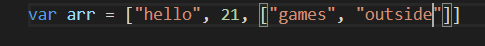
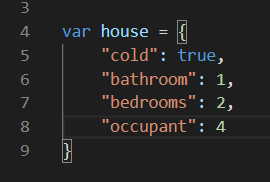
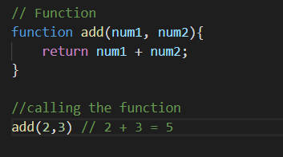

Control flow is just the order the program will run. The program will have different excitations that will let it jump to different sections of the code, it will have does and don'ts depending on the situation. Let's look at a real life example, for instance something we should be familiar with would be making a sandwich, we all have a process on making a sandwich. Control flow can relate to this by if we have the said ingredients we will add it if not, we’ll either add something else or if we don't have anything else that is our sandwich done.
Loops they would be doing something repetitive, i.e repeat until I want you done. Yes back to the sandwich it is! When it comes to spreading a sauce, butter, jam, or what your preference is we’ll keep spreading it until it's done or until we are satisfied with it, that is like a for loop, it will repeat the same task over and over again until it’s done.
When you write a document in Word, it usually is split into sections. You have a header, a title, a footer, and a number of paragraphs. Maybe you also have images and tables. A DOM is just naming each of these sections. In HTML, we have different tags for example: (p, h1, div) and other HTML "tags". We have agreed on these names of each section and agreed on how to tag each section properly. As we know CSS lets us decorate our HTML for example: changes the colour of our heading, resize different sections of our sections and more .So what is the DOM? The DOM (Document Object Mode) puts all our elements in a tree and gives Javascript a gateway for it to manipulate each object to do different things, for example clicking a dot to make it change colour. This lets you create very interactive or dynamic websites.
Arrays are used to store multiple items on a single variable, they will mainy store strings, numbers or EVEN more arrays! We store arrays in square brackets - [ ]
To access a certain value in an array you would refer to the index number, the index number is just the order where the value is. In javaScript it always reads the first index as 0, so if we wanted to acces “hello” in this array we would write: arr[0], this will access “hello”. If we wanted to access an array inside an array it would be very similar, we would go: arr[2][0]. The second square bracket is telling JavaScript that I want to pull the first result in the second array, since the computer sees there is an array inside an array it knows what to do.
Objects are used to represent many or few different keys and each key has a characteristics In the example below you see that the house is the object, and inside the object there are different keys(cold, bathrooms, bedrooms, occupants), each key has its own value assigned to it. Note you can have strings inside objects too
If we wanted to access a value from a key we would have to ask for it, we would do this by “object[“key”] or object.key”. For example if I wanted to know how many bedrooms there are in the house we would type: house.bedrooms or house[“bedrooms”] this will give us a value of 2.
A function is basically a block of code that has particular tasks to do that can be called(executed)when it's needed or how ever many times you would like it to.
Functions would usually have a part of code that is reusable, this will make it where you don’t have to re write the same code over and over again, this is why functions can be extremely helpful, not only to save time, but for the program to run faster since there would be less code.
Take for example if we had to add things multiple times we can use a function for it. In this example we create a function called “add” then we gave it to parameters “num1 and num2” This is so we can give the functions any two numbers we like for it to add together
Then to call the function(run the function) we call it by name (add) then give it the number we wish to add together (2 and 3). 2 and 3 will replace num1 and num2, and be added within the functions, after its been calculated it will give us the result.